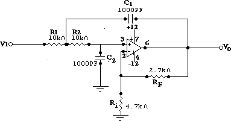
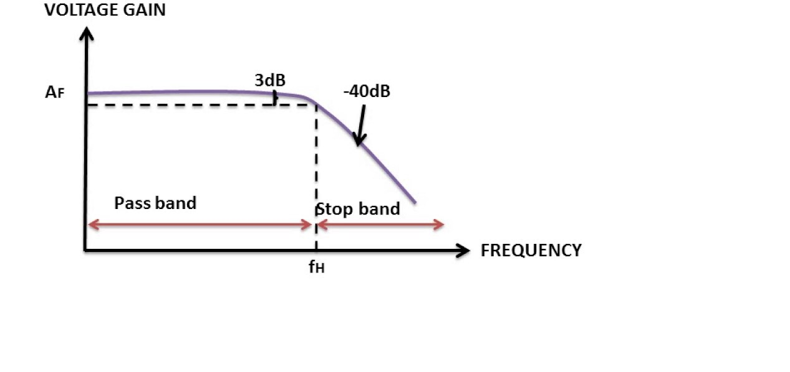

Theory
Objective: To familiarize with 2nd order Sallen Key active Low pass filters and to measure their frequency responses.
A Low Pass Filter is a circuit that can be designed to modify, reshape or reject all unwanted high frequencies of an electrical signal and
accept or pass only low frequency signals .Passive filters are made up of passive components such as resistors, capacitors and inductors and have no amplifying elements (transistors, op-amps, etc) so have no signal gain,
therefore their output level is always less than the input.Here Fig 1 shows passive low pass filter circuit.
Active Filters contain active components such as operational amplifiers, transistors or FET’s within their circuit design. They draw their power from an external power source and use it to boost or amplify the output signal.
active filters are generally much easier to design than passive filters, they produce good performance characteristics, very good accuracy with a steep roll-off and low noise when used with a good circuit design.
The number of storing element decides the order of the filter.Here Fig 2 shows a 1st order active low pass filter circuit.The four primary types of filters include the low-pass filter, the high-pass filter, the band-pass filter, and the notch filter (or the band-reject or band-stop filter).

[Fig 1:Passive Low pass Single Stage Filter Circuit diagram]

[Fig 2:Active Low pass Single Stage Filter Circuit diagram]
Active 2nd order Sallen Key Low pass filters(Butterworth): which are also referred to as VCVS filters, because the op-amp is used as a Voltage Controlled Voltage Source amplifier, are another important type of active filter design because along with the active first order RC filters we looked at previously,
higher order filter circuits can be designed using them.we can define second order filters as simply being: “two 1st-order filters cascaded together with amplification”.
The Sallen-Key filter design is one of the most widely known and popular 2nd order filter designs, requiring only a single operational amplifier for the gain control and four passive RC components to accomplish the tuning.Fig 3 shows a 2nd order filter circuit with R1=R2=10KΩ, C1=C2=1000pF, Feedback Resistor RF=2.7KΩ,Ri=4.7KΩ(as used in our simulator circuit)

[Fig 3:Active Low pass 2nd order Filter Circuit diagram]

[Fig 4:Active Low pass 2nd order Filter Circuit General diagram ,Gain,Cutoff Frequency]
A typical circuit diagram of a 2nd order Sallen key low pass filter is shown in Figure. With R1 = R2 = R and C1 = C2 = C ,the transfer function between the input and the output can be expressed as :
(Vo(s))/(V1(s))=K/(1+(3-K)RCs+〖(RCs)〗^(2 ) ) Where K = 1+RF/Ri The above expression clearly shown a low pass characteristics of the filter with
d.c gain = K, cut off frequency Fo=1/2πRC and the Q-factor, Q = 1/(3-K)
Generally, for 2nd order butter worth filter the Q value is 0.707. and gain should be K~1.586.The frequency response of the Butterworth Filter approximation function is also often referred to as “maximally flat” (no ripples) response because
the pass band is designed to have a frequency response which is as flat as mathematically possible from 0Hz (DC) until the cut-off frequency at -3dB with no ripples. Higher frequencies beyond the cut-off point rolls-off down to zero in the stop band at -40dB/decade .
This is because it has a “quality factor”, “Q” of just 0.707The output voltage gain is given by:
| Vo(s)|= (K * Vin)/√(1+f/fc)^4

[Fig 5: Frequency Response of 2nd order Butterworth Filter]

Procedure

- Connect the circuit elements as mentioned below 1-2 ,3-4 ,5-6, 6-7, 8-9, 10-11, 10-12, 9-13, 14-17, 17-18, 3-15, 16-17.(ex:-Drag from 1 and click on 2.Connecting points are given in simulation tab)connection should be proper such that it implies the above circuit.
- 3 volt p-p sinusoidal voltage is applied at the input. R1=10KΩ=R2, C1=C2=1000pF, RF=2.7KΩ. Put Ri= 4.7KΩ at first.
- Obtain the cut off frequency Fo and the Q-factor for the component values shown in Fig.(Ri=4.7KΩ)by clicking the Calculate button & Verify that the circuit corresponds to a low pass Butter worth filter where the Q-factor =1/√2,Where the input voltage is 3V Sinusoidal.
- Switch on the oscilloscope by clicking "ON" button & click twice the Sine wave button to apply 3V sinusoidal voltage as input & click on the"Output" button to observe the output waveform with amplified output(V0).Channel & Channel2 button shows the input & output signals respectively,Dual, shows both of them.
- Change the Frequency of input signal by the Frequency_Changer button for the values Fo/10, Fo/2, Fo, 2Fo,10Fo & observe the corresponding output voltage signal.
- Frequency_Changer :Here the value of Fo=15.915KHz or 15915Hz(according to the Main circuit).By default the value of frquency will come 1591Hz or 1.591KHz i.eFo/10. First double click this button exactly to change the frequency value Fo/2 i.e. 7957Hz,then single click to obtain Fo.Again click to have 2Fo=31830Hz & single click last time to have 10Fo=159150Hz.
- Switch off the oscilloscope
- Click on Table button to see observation Table & Plot button to see the frequency response plot(Gain(dB)vs.Frequency(KHz)).Click on Clear button to clear datas.
- Set the value of Ri=10KΩ,Click on Calculate button to see the change in Q value.Repete the above steps.
Operating Environment
Minimum System Requirement:
- A standard PC running Microsoft Windows XP, Windows Vista.
- 512MB RAM and 500 MB of available hard-disk space is recommended
- 1024x768 or higher screen resolution;
- a mouse or other pointing device
- A CD-ROM drive

Simulator
Pre-Requisite to run the Simulator:
Link to the simulator:
The simulator for this experiment is designed based on JavaScript platform combined with HTML5 Canvas for graphics. So the users are recommended to use browsers with HTML5 compatible.
Link to the simulator:
Click here to perform the Experiment

Quiz
Test Your Knowledge!!

Reference
A) Book Name:
1)Electronic Devices & Circuits by J.B Gupta
2)Analog Electronic Filters: Theory, Design and Synthesis (Analog Circuits and Signal Processing)by Hercules G. Dimopoulos
B) Video Lecture:Click here for NPTEL Video Lecture